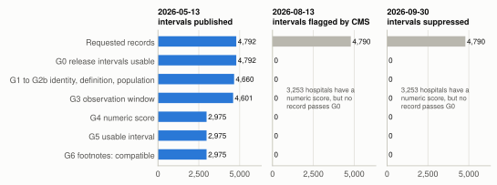
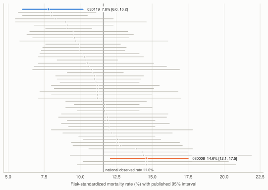
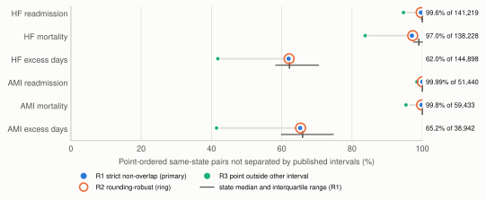
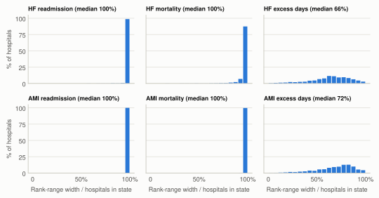
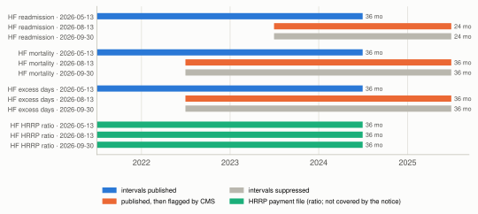

When hospital quality comparisons are not comparable: a release-aware audit of CMS heart-failure outcome measures and their published intervals
This report has not been peer reviewed. Corrected on 25 October 2026: the passages on Amendments 1 and 2, the checklist, competing interests and the use of AI tools now describe what the project records show, and post hoc analyses were added; no prespecified number changed.
Abstract
Background: Public hospital outcome files invite rankings, yet a valid comparison needs records that share a measure definition, population and observation window, with usable published intervals. Ranking uncertainty is well documented; less is known about how often recent Centers for Medicare & Medicaid Services (CMS) files support a requested comparison at all, and how much of a point-estimate ordering their own interval estimates support.
Methods: In this cross-sectional study of US hospital records, a tool was built that applies release, identity, definition, population, window, score, interval and footnote gates, then summarizes interval separation for every same-state pair of compatible hospitals and computes interval-compatible rank ranges. Three CMS releases were loaded: the current files (2026-09-30), an archived release whose intervals CMS later flagged (2026-08-13) and the latest release with published intervals not covered by a CMS notice (2026-05-13, primary; data from July 2021 to June 2024). Heart-failure 30-day readmission and mortality were primary measures. The analysis plan was locked before analysis and amended after the first run.
Results: In the current files, 3,253 hospitals had a heart-failure readmission score and none had a usable interval. In the primary release, 2,975 of 4,792 requested heart-failure readmission records (62.1%) passed every gate; most excluded records had too few cases. Of 141,219 point-ordered same-state pairs, 549 were separated by non-overlapping intervals, leaving 99.6% not separated; 87.3% of hospitals were separated from none of their same-state peers. For mortality, 97.0% of 138,228 orderings were not separated; for heart-failure excess days in acute care, 62.0%. In all 48 states with at least 10 compatible hospitals, the hospital ranked first on readmission could rank in its state's bottom half. Between releases, all six study Measure IDs changed definition; readmission moved from a 36-month to a 24-month window and added Medicare Advantage beneficiaries.
Conclusions: For heart-failure readmission and mortality, CMS's published intervals separate very few within-state hospital orderings, while excess days separates hospitals more often. Release status and definitions can make a comparison invalid before uncertainty is considered. Comparisons from these files should report which records were excluded and why, and show interval-compatible ranges, not single ranks.
Keywords: hospital performance; public reporting; readmission; mortality; heart failure; ranking; interval estimates; data provenance; Medicare
Background
The Centers for Medicare & Medicaid Services (CMS) Provider Data Catalog publishes risk-standardized 30-day readmission and mortality rates for several thousand US hospitals, with a lower and upper interval estimate for each hospital and a category comparing the hospital with the national rate [1, 2]. Anyone can download the files, and a state table or ranking can be produced from them by sorting hospitals on the point estimate alone.
The statistical limits of such rankings are well established. Goldstein and Spiegelhalter showed that, in their school example, about two thirds of pairwise comparisons could not be separated once uncertainty was taken into account [3], and Marshall and Spiegelhalter found that rank intervals derived from published clinic intervals were wide enough that few clinics could be placed confidently in a quarter of the table [4]. Rank uncertainty is several times larger for small hospitals [5].
For the CMS outcome measures in particular, nearly all hospitals have been classified as no different from the national rate [6, 7], measure reliability is limited for many hospitals [8], and rankings built from consecutive reporting periods reclassify most hospitals at the decile level [9]. A statistical white paper commissioned for CMS by the Committee of Presidents of Statistical Societies (COPSS) also cautioned that indirectly standardized rates should not generally be compared directly between hospitals [10].
Methods exist for stating uncertainty about ranks: deterministic rank sets from intervals [11], simultaneous confidence sets for ranks [12], funnel plots against a target [13] and expected ranks or rankability measures [14, 15].
Two practical gaps remain for an analyst working from the public files. First, a requested comparison can be invalid before any uncertainty is considered. Records may come from releases with different observation windows, from measures with similar names but different estimands, from hospitals whose results rest on a different cohort definition, or from rows whose numbers are suppressed, partial or missing for documented reasons. Changes in definitions are known to change which hospitals look better or worse [16-18]. Second, CMS's own interval estimates are rarely used to ask how much of a naive ordering they actually support within the comparison an analyst intends to publish.
This study applies established methods for describing rank uncertainty to recent CMS releases. It adds an auditable check of whether the requested records can be compared before their intervals are interpreted. The questions were: what fraction of records requested for a within-state, same-measure comparison of heart-failure outcomes pass each applicability and comparability check; within the compatible records, what fraction of point-estimate orderings are not separated by the published intervals; how wide are interval-compatible rank ranges; and whether the same Measure ID keeps the same definition across releases.
Methods
Design
This was a cross-sectional audit of public CMS hospital outcome files with a reusable software tool. Eligibility rules, gates, separation rules, summaries and three sensitivity analyses were written in a timestamped internal plan and hash-locked before the analysis stage first ran (Additional file 1); the text of that first lock is retained, and the current plan differs from it only by the amendments and notes appended later. The plan is not a registered protocol.
Data sources and releases
All data came from the CMS Provider Data Catalog for hospitals [1]. For each release the study used the hospital-level Unplanned Hospital Visits and Complications and Deaths files, Hospital General Information, the Footnote Crosswalk, the Measure Dates table, the Hospital Readmissions Reduction Program (HRRP) file and the national and state reference files. Archived releases were retrieved through the catalog's archive listing [19-21], and current files were resolved through the catalog metastore by dataset identifier [22-31]. Each download was checked for a successful response and for web error pages in place of data; current files were also checked against their stated content type and size, archive files for integrity and safe member paths, and every file parsed for the study for a constant number of fields per row. The SHA-256 (Secure Hash Algorithm) checksum of every file was recorded (Additional file 2). The 2026-08-13 archive file was larger than the size given in the archive listing, and one of its members was dated 2026-08-18; it passed the integrity checks and was used only to demonstrate the release gate.
Three releases were loaded, each with its own hospital list, footnotes, Measure Dates and reference aggregates, so that no attribute was joined across releases (Table 1). In the current files, released on 2026-09-30, interval estimates and national comparison categories for 18 outcome measures, including all six study measures, are shown as "Not Available". A CMS notice of 2026-09-18 stated that issues had been identified affecting publicly reported national compare values and confidence intervals and that these values would be suppressed until the July 2027 release, while hospital rates were not affected [32]. The archived release of 2026-08-13 still contains the intervals that the notice describes as affected. The archived snapshot of 2026-05-13 (April 2026 refresh) is the latest release with published intervals that is not covered by a correction or suppression notice, and it was the primary release. No interval from the flagged release was used in any comparison.
Table 1. Releases loaded and their documented interval status
| Release | Source | Interval status | Facilities in outcome files | Hospitals in General Information | Role |
|---|---|---|---|---|---|
| 2026-05-13 | Official archive snapshot (April 2026 refresh) | Published | 4,792 | 5,432 | Primary |
| 2026-08-13 | Official archive (July 2026 refresh) | Published, then flagged by CMS notice 2026-89-IP | 4,790 | 5,419 | Gate demonstration |
| 2026-09-30 | Current catalog files | Suppressed ("Not Available") | 4,790 | 5,419 | Gate demonstration |
Facilities are distinct Facility IDs in the Unplanned Hospital Visits file; General Information lists every hospital registered with Medicare in that release, including types without outcome measures.
Measures
The primary measures were the heart-failure 30-day risk-standardized readmission rate (READM_30_HF) and mortality rate (MORT_30_HF), both percentages with lower values favorable [2]. Both are risk-standardized with hierarchical models developed for public reporting [33, 34]. The heart-failure excess days in acute care measure (EDAC_30_HF), reported in days per 100 discharges and favorable when lower or negative, was analyzed as a supporting measure. The acute myocardial infarction equivalents were analyzed separately as a prespecified secondary condition. Each measure was analyzed on its own; no score was averaged across mortality, readmission and excess days. The HRRP excess readmission ratios for heart failure and acute myocardial infarction were included only to test whether the definition checks reject a look-alike measure.
The interval columns are CMS's 95% interval estimates; the methodology reports describe a hospital-level bootstrap of the hierarchical models [35-37]. CMS classifies a hospital as better or worse than the national rate (or, for excess days, than zero) when the whole interval lies below or above it, and does not report a rate for hospitals with fewer than 25 eligible cases, or fewer than 50 for acute myocardial infarction excess days [7, 35-37]. These categories were kept as source information and were not recomputed.
Records, availability states and gates
The unit of analysis was a hospital-measure-release record. Every parsed value was stored beside the exact source string. Records with a non-numeric score were assigned one availability state from their footnotes in a fixed precedence: not eligible for the reporting program (footnote 19), not applicable to the hospital (12), no eligible cases (7), too few cases (1), suppressed by CMS (4), cannot be calculated (13), not available for the period (5), or missing without a footnote. Hospitals listed in General Information but absent from a measure file were counted only in a broader denominator.
Gates were applied in a fixed order and each record's first failure was recorded, along with each gate's independent pass count:
- G0 release: the release's documented interval status is published.
- G1 identity: a valid six-character Facility ID, a valid state code and a unique Facility ID and Measure ID pair.
- G2 definition: an exact Measure ID in the study dictionary with a documented quantity, unit and direction, and a single source measure name for that ID. Different Measure IDs fail here.
- G2b population: records of a hospital type whose results rest on a documented different cohort definition or data source are not compared with other types.
- G3 window: start and end dates equal the same release's official Measure Dates window; footnotes 29 (partial performance period) and 3 (shorter period than required) fail.
- G4 score: the score is a finite number.
- G5 interval: both limits are numeric, lower is at most the score, the score is at most the upper limit, lower is below upper, and all lie within the unit bounds.
- G6 footnotes: no availability footnote on an otherwise numeric record. Caution footnotes (11, 23 and 28) pass with a flag.
Records failing only G2b were compared separately, among hospitals of the same type in the same state; this descriptive comparison was added after Amendment 2 so that G2b was applied as written. Record-level decisions for every primary-release record and for the heart-failure records in the current files are listed in Additional file 3.
Pairwise separation
The comparison universe was a state, the District of Columbia or a territory, in one release and one Measure ID; "state" below includes all of these. Within each universe, every unordered pair of compatible hospitals was formed. Scores and limits were compared as integers in units of the last published decimal place. A pair was point-ordered when the published scores differed; equal scores were ties. Under the primary rule (R1), a pair was separated when one hospital's upper limit was below the other's lower limit; touching limits were not separated. The primary pair metric was the share of point-ordered pairs not separated under R1, pooled across states. Because large states contribute many more pairs, the same share was also summarized across states with each state weighted equally, and for each hospital as the share of its point-ordered same-state comparisons that were separated.
Non-overlap of two marginal intervals is a conservative descriptive rule [38]. A pair that is not separated has not been shown to be equivalent, and separation is not the result of a formal test.
Rank ranges
For a hospital i among n compatible hospitals in the same release, state and measure, the interval-compatible rank range runs from 1 plus the number of hospitals whose upper limit is below i's lower limit, to n minus the number of hospitals whose lower limit is above i's upper limit. This is the counting rule of Klein, Wright and Wieczorek [11] applied to CMS's published marginal intervals. It gives the ranks a hospital could hold if each true value lay anywhere inside its published interval. Because CMS publishes marginal 95% intervals and no covariance, the range carries no probability statement, has no stated coverage and is not a simultaneous confidence set [11, 12]. No simulation of ranks from rounded limits was performed. The naive comparator was the point-estimate rank within the same state and measure, with ties sharing the best rank. A worst rank in the bottom half of a state means a worst rank greater than n/2, which for an odd n includes the middle rank.
Prespecified examples
For the lead example, the plan specified, among states with at least 10 compatible hospitals for heart-failure readmission, the state with the median compatible count (lower median, ties broken alphabetically). The pipeline ordered these states by compatible count and then by state code and took the state at the lower-median position; this reading was written into the plan after the selection was known. The example shows that state's point-estimate first-ranked hospital and its rank range. The passing example was to be the separated pair with the largest gap between intervals in the same state and measure.
Amendments after the first analysis run
Three amendments were made after the first analysis run. Three later notes on the record corrected statements in the plan about timing, prior exposure and source pages, added the 2025 readmission report as the source matching the primary-release measure version, and recorded the definition changes documented for the newer releases. None changed a gate, rule or result of the general comparison; the first note also recorded how the lead-example rule was implemented and added the separate comparison of records failing only G2b (Additional file 1).
Amendment 1 was needed because the passing-example rule returned no pair: in the lead state, which was then Alabama, no heart-failure readmission pair was separated. The passing example was taken from heart-failure mortality in the same state by the same rule, with excess days as the next fallback. Amendment 1 was hash-locked 96 seconds after the first lock and 12 seconds before the run that selected the mortality pair finished. The earlier run under the first lock, whose readmission result prompted the amendment, had computed pair counts for every measure and state, and no record shows which of its outputs were looked at.
Amendment 2 corrected the population gate. Before the lock, G2b had been resolved as excluding no records because no qualifying documentation had been found. The first passing example, a pair in Alabama, included a Veterans Affairs (VA) medical center. The AI coding agent then re-read the cohort sections of the CMS methodology reports, and Amendment 2 was written and hash-locked 88 seconds after the run that produced the example finished. They state that the Medicare enrollment criteria do not apply to VA hospitalizations and that VA administrative data are a data source for VA beneficiaries [36, 37, 39]; the 2025 readmission report, which matches the measure version in the primary release and was obtained later, contains the same statements [35]. That is the kind of documented difference G2b was written to catch, so VA hospital records were compared only with other VA hospitals for all six measures. With VA records moved out of the general comparison, the unchanged lead-example rule selected Arizona instead of Alabama. Four states (Alabama, Arizona, Massachusetts and Mississippi) tied at the median count of 52; the positional rule selected Arizona, and choosing the alphabetically first tied state would have selected Alabama, where 0 of 1,282 point-ordered heart-failure readmission pairs and 7 of 1,292 mortality pairs were separated. The run before Amendment 2 is kept, and its results are reported beside the amended results.
Amendment 3 corrected the wording of a release status note in the configuration ("18 claims-based outcome measures" became "18 outcome measures", because the notice also covers two hybrid measures) and changed no rule or result.
Sensitivity analyses
Three sensitivity analyses were prespecified. S1 compared the primary compatible subset with a strict subset that also excluded caution footnotes, and expressed record coverage against the broader General Information denominator. S2 compared R1 with a rounding-robust rule (R2), which required the gap between intervals to exceed one unit in the last published decimal place, and with a lenient rule (R3), under which each point estimate lies outside the other hospital's interval. The share of point-ordered pairs that CMS's own categories place on opposite sides of the national rate (or of zero for excess days) is shown as a reference row and is not a rule of this study. S3 repeated every summary for the acute myocardial infarction measures.
Definitional and release comparisons
Within each release, every pair of dictionary measures was checked for agreement on Measure ID, quantity, unit, observation window, condition and source program. Across releases, each study measure's window, its overlap with the primary release and any documented definition change were recorded. Definition changes were taken from the fiscal year (FY) 2026 inpatient prospective payment system final rule and the CMS answers to frequently asked questions for Summer 2026 public reporting [40, 41]. Facility IDs present in one release and not another were counted; no record was linked across a changed identifier by name.
Validation and reproducibility
Validation evidence was kept in separate categories. Data checks confirmed interval order and bounds for compatible records, window agreement with Measure Dates, the absence of numeric scores carrying availability footnotes, and agreement between each release's documented interval status and the interval fields actually present. Source reconciliation compared counts of CMS categories from hospital rows with the counts in the CMS national and state files and recorded the differences; it has no pass condition. Raw reconstruction re-read 24 prespecified records from the raw CSV bytes with a second, minimal parser that does not use the pipeline's loader (both written with the AI coding assistant) and compared 14 fields each. Software cross-checks consisted of an R reimplementation of the pair counts and a full rebuild and reanalysis from cached inputs, compared with the reported run at an absolute tolerance of 10−12. Synthetic fixtures were used only for software tests of ties, touching and reversed limits, missing limits, low-volume and partial-period footnotes, zero-width intervals, the population gate and direction handling; they never entered study tables.
A 23-item checklist of records, examples, documents, references and numbers was kept with the evidence (Additional file 2). On 7 October 2026 a script written and run by the AI coding assistant re-derived every item from the raw files and saved documents, and all matched; the reference item covered 45 of the 46 references, and no item compared the configuration. None of these checks is an external validation of the CMS estimates themselves.
The pipeline was written in Python 3.13.5 with SQLite 3.49.1, pandas 3.0.6 and matplotlib 3.11.2; the cross-check used R 4.5.1. The source archive, configuration, locked plan, tests and a synthetic demonstration are provided in Additional file 4. Reporting follows the Strengthening the Reporting of Observational Studies in Epidemiology (STROBE) statement and the applicable items of the REporting of studies Conducted using Observational Routinely-collected health Data (RECORD) extension [42, 43] (Additional file 5).
Results
Release status
In the current files, 3,253 hospitals had a numeric heart-failure readmission score, 3,049 a mortality score and 3,108 an excess-days score, and none had a usable interval (Figure 1). Any ranking built from the current files therefore has no published uncertainty. The flagged release had intervals for all 3,253 scored readmission records, but every record failed G0 because of the CMS notice. In both newer releases every study record failed G0, so all comparisons below use the primary release.

Eligibility and comparability
In the primary release, 2,975 of 4,792 requested heart-failure readmission records (62.1%) passed every gate, or 54.8% of the 5,432 hospitals in General Information (Figure 1, Table 2). The most common first failure was too few cases (1,118 records), followed by results not available for the period (323), non-participation in the reporting program (170), the documented VA cohort difference (132), partial-period footnotes (59) and no eligible cases (15); the supplementary tables in Additional file 6 give the full gate flow and reasons (Tables S1 and S2). Every one of the 59 partial-period records had a numeric score and interval and would have entered a naive comparison. Mortality and the excess-days measure showed the same pattern (Table 2). Every record with a numeric score in the primary release also had both interval limits, so G5 excluded no further records.
Compatible heart-failure readmission records came from 2,563 of 3,115 acute care hospitals and 412 of 1,378 critical access hospitals. Table S11 lists every hospital type; no record was compatible for Department of Defense hospitals (32 requested), children's hospitals (94 requested) or rural emergency hospitals (41 requested).
Table 2. Record-level gate flow in the primary release (2026-05-13)
| Measure | Requested | After G2b | After G3 | After G4 (numeric score) | Compatible | Share of requested | Share of General Information |
|---|---|---|---|---|---|---|---|
| HF readmission | 4,792 | 4,660 | 4,601 | 2,975 | 2,975 | 62.1% | 54.8% |
| HF mortality | 4,792 | 4,660 | 4,601 | 2,926 | 2,926 | 61.1% | 53.9% |
| HF excess days | 4,792 | 4,660 | 4,601 | 2,975 | 2,975 | 62.1% | 54.8% |
| AMI readmission | 4,792 | 4,660 | 4,616 | 1,699 | 1,699 | 35.5% | 31.3% |
| AMI mortality | 4,792 | 4,660 | 4,615 | 1,826 | 1,826 | 38.1% | 33.6% |
| AMI excess days | 4,792 | 4,660 | 4,621 | 1,445 | 1,445 | 30.2% | 26.6% |
Counts are records remaining after each gate in the order applied; G0, G1 and G2 removed no record in this release, and G5 and G6 removed none after G4. HF: heart failure; AMI: acute myocardial infarction; G2b: population gate; G3: observation-window gate; G4: numeric-score gate.
All six measures used the same 36-month window (2021-07-01 to 2024-06-30) in the primary release, and every record's dates matched its official window.
Lead example
The prespecified rule selected Arizona for the lead example, with 52 compatible of 86 requested heart-failure readmission records (Figure 2). The point-estimate first-ranked hospital (Facility ID 030007) had a rate of 17.5% with an interval of 14.6% to 21.0%. Its interval overlapped every other hospital's interval in the state, so its interval-compatible range was ranks 1 to 52 of 52. None of the 1,299 point-ordered pairs in the state was separated, so the published intervals support none of the pairwise orderings in a point-estimate ranking of the state.

Passing example
Under Amendment 1, the passing example came from heart-failure mortality in the same state, where 10 of 1,199 point-ordered pairs were separated (Figure 3). The widest separation was between Facility ID 030119, at 7.8% (6.0% to 10.2%), and Facility ID 030006, at 14.6% (12.1% to 17.5%), a gap of 1.9 percentage points between the intervals. Both records passed every gate, and CMS's own categories placed the two hospitals on opposite sides of the national rate.

Pairwise separation
Across all states, 549 of 141,219 point-ordered heart-failure readmission pairs were separated, so 99.6% were not (Table 3, Figure 4). Weighting each of the 53 states equally (the 50 states, the District of Columbia, Puerto Rico and the US Virgin Islands) gave the same picture: the median state share not separated was 100.0% (range 95.8% to 100.0%; Table S4). At the hospital level, 2,596 of 2,973 hospitals with at least one point-ordered comparison (87.3%) were separated from none of their same-state peers.

For heart-failure mortality, 97.0% of 138,228 point-ordered pairs were not separated, about one ordering in 34 was separated (against one in 257 for readmission), and 54.2% of hospitals were separated from no peer. Excess days behaved differently: 62.0% of 144,898 orderings were not separated, the median hospital was separated from 35.0% of its same-state peers, and only 20 hospitals were separated from none.
Among VA hospitals, compared only with each other, 117 records were otherwise compatible for heart-failure readmission and 30 states had at least two; none of the 152 point-ordered VA pairs were separated for readmission and 5 of 156 for mortality (Table S12).
Table 3. Pairwise separation in the primary release, by measure
| Measure | Compatible hospitals | Pairs | Tied pairs | Point-ordered pairs | Separated (R1) | Not separated, pooled | Not separated, median state | Hospitals separated from none |
|---|---|---|---|---|---|---|---|---|
| HF readmission | 2,975 | 145,041 | 3,822 | 141,219 | 549 | 99.6% | 100.0% | 87.3% |
| HF mortality | 2,926 | 140,339 | 2,111 | 138,228 | 4,102 | 97.0% | 99.0% | 54.2% |
| HF excess days | 2,975 | 145,041 | 143 | 144,898 | 55,129 | 62.0% | 62.2% | 0.7% |
| AMI readmission | 1,699 | 53,384 | 1,944 | 51,440 | 3 | 99.994% | 100.0% | 99.8% |
| AMI mortality | 1,826 | 60,910 | 1,477 | 59,433 | 133 | 99.8% | 100.0% | 92.2% |
| AMI excess days | 1,445 | 38,980 | 38 | 38,942 | 13,542 | 65.2% | 65.9% | 1.4% |
Pairs are unordered pairs of compatible hospitals in the same state; point-ordered pairs have different published scores. R1: strict non-overlap of the published 95% intervals. The last column is a share of hospitals with at least one point-ordered same-state comparison, which excludes hospitals that are alone in their state or tied with every peer. HF: heart failure; AMI: acute myocardial infarction.
Rank ranges
For heart-failure readmission, the median rank range covered 100% of the possible ranks in its state. Because a hospital separated from no peer can hold any rank, the 87.3% of hospitals with a full range from first to last are the same hospitals that were separated from none (Figure 5). In all 48 states with at least 10 compatible hospitals, the point-estimate first-ranked hospital's worst compatible rank lay in the bottom half of the state; the median worst rank was 98.9% of the way down the state's list. For mortality, this held in 44 of 48 states. For excess days, the median range covered 66% of possible ranks and the first-ranked hospital's worst rank fell in the bottom half in 7 of 48 states (Table S5).

Post hoc analyses (added 24 October 2026)
These analyses were specified after every prespecified result was known (Amendment 4) and change no prespecified number. Each point-ordered pair received an approximate two-sided z-test, with standard errors derived from the published limits on the log scale for the rates and on the linear scale for excess days, hospitals treated as independent, and multiplicity controlled within each state and measure. For heart-failure readmission, 3,009 of 141,219 pairs (2.13%) differed at the 5% level without correction, 44 (0.03%) after Benjamini–Hochberg control and 18 (0.01%) after Holm control; every pair separated by R1 was also significant without correction. For mortality, the shares were 9.78%, 1.37% and 0.25%. Among same-state readmission pairs in which both hospitals were in the top national tertile of eligible cases (320 or more), 1.78% of 18,701 orderings were separated, and none of 14,004 in the lowest tertile. Without the state restriction, 16,895 of 4,311,047 readmission pairs (0.39%) and 3.32% of mortality pairs were separated. Published-interval rankability was 0.34 for readmission, 0.57 for mortality and 0.94 for excess days. The approximate test assumes independence and intervals symmetric on the scale used, neither of which CMS states.
Sensitivity analyses
S1: excluding caution-flagged records left the heart-failure readmission share not separated unchanged at 99.61% and changed the mortality share from 97.03% to 97.01%. Against the broader General Information denominator, compatible coverage was 54.8% for readmission and 53.9% for mortality.
S2: the rounding-robust rule separated 0.34% of point-ordered readmission pairs, against 0.39% under R1. The lenient point-outside rule separated 5.4% for readmission, 16.3% for mortality and 58.2% for excess days (Figure 4, Table S3). Even under the lenient rule, most readmission and mortality orderings were not separated. For reference, CMS's categories placed 0.05% of point-ordered readmission pairs and 0.40% of mortality pairs on opposite sides of the national rate.
S3: for acute myocardial infarction, 1,699, 1,826 and 1,445 records were compatible for readmission, mortality and excess days. The shares of point-ordered pairs not separated were 99.994%, 99.8% and 65.2%, the same ordering as for heart failure.
The run before Amendment 2, which kept VA records in the general comparison, gave shares not separated of 99.6%, 96.3% and 61.4% for heart-failure readmission, mortality and excess days; the amended values are 99.6%, 97.0% and 62.0%.
Definitional and release comparisons
Within the primary release, every pair of heart-failure measures failed at least two definition checks (Table S6). Readmission and mortality shared a window and a unit but differed in Measure ID and quantity. The HRRP excess readmission ratio for heart failure shared the readmission measure's window but differed in Measure ID, quantity, unit and source program, so a request to compare the two was rejected even though both are labeled as heart-failure readmission.
Across releases (Figure 6, Table S7), READM_30_HF covered 2021-07-01 to 2024-06-30 (36 months) in the primary release and 2023-07-01 to 2025-06-30 (24 months) in the current files, sharing 12 months; the newer readmission measure also includes Medicare Advantage beneficiaries and uses updated risk models [39-41]. MORT_30_HF and EDAC_30_HF kept 36-month windows that shifted by one year and shared 24 months. For all six study measures, the newer releases also include patients admitted with COVID-19, no longer adjust for a history of COVID-19 and use updated code sets and risk-adjustment data; for excess days, COVID-19 readmissions, emergency department visits and observation stays now count in the outcome [40, 41]. Every study Measure ID therefore changed definition between the primary and the newer releases. In the current files, the readmission and mortality windows no longer match each other. Between the primary and current releases, 12 Facility IDs dropped out and 10 appeared; they were not linked by name.

Validation
All 14 validation checks with a pass condition passed (Table S10). The 24 reconstructed records matched the raw files on every compared field (Table S9). The R reimplementation reproduced all pair, point-ordered and separated counts, and the full rerun reproduced every output table.
Reconciliation with CMS aggregates was incomplete. In the primary release, 6 of 24 national category cells and 862 of 1,248 state cells matched the counts from hospital rows exactly (Tables S8 and S10). In no national or state cell did the hospital rows exceed the CMS count; the national counts were larger by up to 150 hospitals, mostly in the no-different and too-few-cases categories. The national counts equal the cohort counts in the CMS methodology reports, for example 278, 736, 551 and 2,149 for acute myocardial infarction excess days [37]. Summed over categories, the national counts exceeded the hospital rows by 226 to 229 hospitals for the heart-failure measures and 137 to 145 for acute myocardial infarction. Each measure also has 170 hospital records withheld under footnote 19, a number that matches neither difference, so the public files do not show which hospitals the national counts add. The current files publish no category counts for these measures, so nothing could be reconciled there.
Discussion
Principal findings
Two kinds of problem limited the comparisons that the public files support. The first was definitional and release-related. The newest files carry hospital rates without the intervals needed to interpret them, an earlier release carries intervals that CMS has flagged, and the same Measure ID changed its window and cohort between releases. Within the primary release, 38% of requested heart-failure readmission records could not enter a same-measure comparison, mostly because results were not reported for low volume, and some records had numbers that looked valid but rested on a partial performance period or a different cohort definition.
The second problem was sampling uncertainty. Among compatible hospitals in the same state, CMS's own intervals separated about one in 257 heart-failure readmission orderings and about one in 34 mortality orderings, and in every state with at least 10 compatible hospitals the hospital ranked first on readmission could rank in the bottom half. Excess days separated hospitals far more often.
Relation to prior work
These results extend long-standing findings to the most recent CMS release whose published intervals are not covered by a CMS notice. For readmission and mortality, the share of unseparated pairs is higher than the roughly two thirds reported for schools by Goldstein and Spiegelhalter [3]. The figures are not directly comparable, because they used overlap intervals calibrated for pairwise comparison, which are narrower than the conventional 95% intervals CMS publishes. The high share is consistent with the narrow spread of heart-failure readmission and mortality rates reported when the measures were developed [33, 34] and with the small share of hospitals CMS classifies as different from the national rate [7]. The concentration of rank uncertainty among small hospitals described by Davidson and colleagues [5] appears here mainly as the large number of records withheld for too few cases; this study did not analyze range width by hospital volume.
The contrast between excess days and the readmission and mortality measures matches Horwitz and colleagues, who found many more outliers on excess days than on readmission [17], and Wadhera and colleagues, who found that hospital groupings differed between the two [18]. Glance and colleagues showed that rankings reclassify most hospitals at the decile level between overlapping reporting periods [9]; the present results show that, within a single release and state, the intervals rarely supported the ordering at all.
The rank ranges use the deterministic rule of Klein, Wright and Wieczorek [11]. Applied to marginal intervals, it gives descriptive ranges. Proper simultaneous confidence sets for ranks need standard errors and a joint distribution [12], and simulations from rounded limits, as in earlier work on published intervals [4], would require assumptions the files cannot support. Overlap of marginal intervals is conservative relative to a formal test of a difference [38, 44], so the shares reported here describe what the published intervals show and do not estimate how many pairs truly differ.
Sampling uncertainty and definitional incompatibility are different problems
Reporting intervals, shrinkage and better models address sampling uncertainty. They do not repair a comparison across releases with different windows, between a risk-standardized rate and a payment-program ratio, or between hospitals whose results rest on different cohort rules. In this study, the release status of the published intervals excluded whole releases, the definitional checks removed a further 191 heart-failure readmission records in the primary release (132 for the documented VA cohort difference and 59 for partial periods), and sampling uncertainty acted on the records that remained. An analyst working from the current files cannot attach published intervals at all, because CMS has suppressed them until the July 2027 release, and an analyst who joins hospital attributes or earlier scores across releases would be mixing definitions under one Measure ID.
Implications for analysts
A comparison table should identify its release and observation window and explain each record's exclusion. For the records that remain, it should show the published intervals and interval-compatible rank ranges, with CMS's categories retained as source information. The tool described here produces these items and refuses comparisons that fail a gate. It is meant for analysts and does not recommend hospitals. Its outputs describe one public measure population and say nothing about other aspects of hospital quality.
Limitations
The primary release was chosen because the newer releases do not provide usable intervals. Its 36-month window ends in June 2024. The CMS notice does not describe the issues it reports, so earlier releases may also have been affected. The primary release's intervals are used as published. Pairwise comparison of indirectly standardized rates is itself questioned by statisticians [10]; the study describes what the published intervals show for orderings that public users commonly make, without endorsing those orderings. Separation was judged from marginal 95% intervals with one-decimal precision, without covariance, and the bootstrap intervals CMS publishes may not have exact nominal coverage [45].
The VA rule rests on cohort statements identified only after the plan was locked, although the reports had been saved about 2 minutes before the lock. Both the run before Amendment 2 and the amended run are reported: pooled shares not separated changed by at most 0.7 percentage points, but the share of hospitals separated from no peer on heart-failure mortality rose from 46.5% to 54.2% when VA hospitals were removed.
Reconciliation with CMS national counts could not be completed: the national files count 137 to 229 more hospitals per measure than the hospital-level file places in any category, and the public files do not identify them.
The analysis covers heart-failure and acute myocardial infarction measures in three releases and does not attribute any difference between releases to hospital actions. The checklist covered a sample of records, and none of the checks validates the CMS estimates themselves.
Conclusions
In public CMS files, a within-state ranking of hospitals on heart-failure readmission or mortality conveys far more certainty than the published intervals support, and the newest files remove those intervals altogether. Release status, definition changes under a stable Measure ID and documented cohort differences can invalidate a comparison before uncertainty is considered. Analysts should check these conditions explicitly, report excluded records with their reasons and present interval-compatible ranges instead of single ranks.
List of abbreviations
AMI: acute myocardial infarction; CMS: Centers for Medicare & Medicaid Services; COPSS: Committee of Presidents of Statistical Societies; DOI: digital object identifier; EDAC: excess days in acute care; FY: fiscal year; HF: heart failure; HRRP: Hospital Readmissions Reduction Program; RECORD: REporting of studies Conducted using Observational Routinely-collected health Data; SHA: Secure Hash Algorithm; STROBE: Strengthening the Reporting of Observational Studies in Epidemiology; VA: Veterans Affairs.
Declarations
Ethics approval and consent to participate
Not applicable. This secondary analysis used only publicly released, hospital-level aggregate data published by CMS. No participants were recruited, and no individual-level or identifiable data were accessed. Ethics review was therefore not sought.
Consent for publication
Not applicable.
Availability of data and materials
The datasets analyzed in this study are publicly available from the CMS Provider Data Catalog [1]. The archived releases of 13 May 2026 and 13 August 2026 can be retrieved exactly from the catalog's archive [21]. The current files used are identified by their dataset identifiers; CMS replaces them at each refresh, so their recorded checksums allow any later copy to be verified. Every archive and dataset used is cited in the reference list, and the download URL, release date and SHA-256 checksum of every file are listed in Additional file 2. No primary data were collected. The source code, configuration, locked analysis plan, tests, a synthetic demonstration dataset and the output tables are provided in Additional file 4. From the cached input files the pipeline regenerates every reported result; on a new installation it retrieves the archived releases, checks every file against its recorded checksum and stops rather than substituting a newer file.
Project name: hospcomp. Project home page: https://anibose11.github.io/projects/hospital-comparability/; the code is also distributed as Additional file 4. Archived version: https://doi.org/10.5281/zenodo.23450175. Operating system: platform independent (tested on macOS 27, arm64). Programming languages: Python 3.12 or later, SQL (SQLite) and, optionally, R. Other requirements: listed in requirements.lock. License: MIT for the project code; the CMS data are US federal government data and are not covered by the project license. Any restrictions to use by non-academics: none.
Competing interests
The author declares no competing interests.
Funding
This research received no specific grant from any funding agency in the public, commercial or not-for-profit sectors.
Authors' contributions
Animesh Bose is the sole author. Animesh Bose conceived and designed the study, developed the methodology, explored the data, and reviewed and verified the analyses and text. AI coding and writing assistants, named in the next section, helped write code, run analyses and draft text under the author's direction.
Acknowledgements
Not applicable.
References
- Centers for Medicare & Medicaid Services. Provider Data Catalog: hospitals [Internet]. Baltimore (MD): Centers for Medicare & Medicaid Services; 2026 [cited 2026 Oct 7]. Available from: https://data.cms.gov/provider-data/topics/hospitals
- Centers for Medicare & Medicaid Services. Hospital downloadable database data dictionary [Internet]. Baltimore (MD): Centers for Medicare & Medicaid Services; 2026 Jul [cited 2026 Oct 7]. Available from: https://data.cms.gov/provider-data/sites/default/files/data_dictionaries/hospital/HOSPITAL_Data_Dictionary.pdf
- Goldstein H, Spiegelhalter DJ. League tables and their limitations: statistical issues in comparisons of institutional performance. J R Stat Soc Ser A Stat Soc. 1996;159(3):385-443. doi:10.2307/2983325
- Marshall EC, Spiegelhalter DJ. Reliability of league tables of in vitro fertilisation clinics: retrospective analysis of live birth rates. BMJ. 1998;316(7146):1701-4. doi:10.1136/bmj.316.7146.1701
- Davidson G, Moscovice I, Remus D. Hospital size, uncertainty, and pay-for-performance. Health Care Financ Rev. 2007;29(1):45-57.
- Silber JH, Rosenbaum PR, Brachet TJ, Ross RN, Bressler LJ, Even-Shoshan O, et al. The Hospital Compare mortality model and the volume-outcome relationship. Health Serv Res. 2010;45(5 Pt 1):1148-67. doi:10.1111/j.1475-6773.2010.01130.x
- Bernheim SM, Grady JN, Lin Z, Wang Y, Wang Y, Savage SV, et al. National patterns of risk-standardized mortality and readmission for acute myocardial infarction and heart failure. Update on publicly reported outcomes measures based on the 2010 release. Circ Cardiovasc Qual Outcomes. 2010;3(5):459-67. doi:10.1161/CIRCOUTCOMES.110.957613
- Thompson MP, Kaplan CM, Cao Y, Bazzoli GJ, Waters TM. Reliability of 30-day readmission measures used in the Hospital Readmission Reduction Program. Health Serv Res. 2016;51(6):2095-114. doi:10.1111/1475-6773.12587
- Glance LG, Nerenz DR, Joynt Maddox KE, Hall BL, Dick AW. Reproducibility of hospital rankings based on Centers for Medicare & Medicaid Services Hospital Compare measures as a function of measure reliability. JAMA Netw Open. 2021;4(12):e2137647. doi:10.1001/jamanetworkopen.2021.37647
- Ash AS, Fienberg SE, Louis TA, Normand SLT, Stukel TA, Utts J. Statistical issues in assessing hospital performance [Internet]. Commissioned by the Committee of Presidents of Statistical Societies. Baltimore (MD): Centers for Medicare & Medicaid Services; 2012 [cited 2026 Oct 7]. Available from: https://www.cms.gov/Medicare/Quality-Initiatives-Patient-Assessment-Instruments/HospitalQualityInits/Downloads/Statistical-Issues-in-Assessing-Hospital-Performance.pdf
- Klein M, Wright T, Wieczorek J. A joint confidence region for an overall ranking of populations. J R Stat Soc Ser C Appl Stat. 2020;69(3):589-606. doi:10.1111/rssc.12402
- Mogstad M, Romano JP, Shaikh AM, Wilhelm D. Inference for ranks with applications to mobility across neighbourhoods and academic achievement across countries. Rev Econ Stud. 2024;91(1):476-518. doi:10.1093/restud/rdad006
- Spiegelhalter DJ. Funnel plots for comparing institutional performance. Stat Med. 2005;24(8):1185-202. doi:10.1002/sim.1970
- Lingsma HF, Steyerberg EW, Eijkemans MJ, Dippel DW, Scholte Op Reimer WJ, Van Houwelingen HC. Comparing and ranking hospitals based on outcome: results from The Netherlands Stroke Survey. QJM. 2010;103(2):99-108. doi:10.1093/qjmed/hcp169
- van Dishoeck AM, Lingsma HF, Mackenbach JP, Steyerberg EW. Random variation and rankability of hospitals using outcome indicators. BMJ Qual Saf. 2011;20(10):869-74. doi:10.1136/bmjqs.2010.048058
- Glance LG, Li Y, Dick AW. Impact on hospital ranking of basing readmission measures on a composite endpoint of death or readmission versus readmissions alone. BMC Health Serv Res. 2017;17(1):327. doi:10.1186/s12913-017-2266-4
- Horwitz LI, Wang Y, Altaf FK, Wang C, Lin Z, Liu S, et al. Hospital characteristics associated with postdischarge hospital readmission, observation, and emergency department utilization. Med Care. 2018;56(4):281-9. doi:10.1097/MLR.0000000000000882
- Wadhera RK, Joynt Maddox KE, Desai NR, Landon BE, Vaduganathan M, Gilstrap LG, et al. Evaluation of hospital performance using the excess days in acute care measure in the Hospital Readmissions Reduction Program. Ann Intern Med. 2021;174(1):86-92. doi:10.7326/M20-3486
- Centers for Medicare & Medicaid Services. Hospitals data archive, snapshot of 2026 May 13 (hospitals_2026-05-13.zip) [dataset on the Internet]. Baltimore (MD): Centers for Medicare & Medicaid Services; 2026 [cited 2026 Oct 7]. Available from: https://data.cms.gov/provider-data/sites/default/files/dataset-archives/theme/hospitals/hospitals_2026-05-13.zip
- Centers for Medicare & Medicaid Services. Hospitals data archive, release of 2026 Aug 13 (hospitals_2026-08-13.zip) [dataset on the Internet]. Baltimore (MD): Centers for Medicare & Medicaid Services; 2026 [cited 2026 Oct 7]. Available from: https://data.cms.gov/provider-data/sites/default/files/dataset-archives/theme/hospitals/hospitals_2026-08-13.zip
- Centers for Medicare & Medicaid Services. Provider Data Catalog archived data: hospitals [Internet]. Baltimore (MD): Centers for Medicare & Medicaid Services; 2026 [cited 2026 Oct 7]. Available from: https://data.cms.gov/provider-data/archived-data/hospitals
- Centers for Medicare & Medicaid Services. Unplanned Hospital Visits - Hospital, dataset 632h-zaca, released 2026 Sep 30 [dataset on the Internet]. Baltimore (MD): Centers for Medicare & Medicaid Services; 2026 [cited 2026 Oct 7]. Available from: https://data.cms.gov/provider-data/dataset/632h-zaca
- Centers for Medicare & Medicaid Services. Complications and Deaths - Hospital, dataset ynj2-r877, released 2026 Sep 30 [dataset on the Internet]. Baltimore (MD): Centers for Medicare & Medicaid Services; 2026 [cited 2026 Oct 7]. Available from: https://data.cms.gov/provider-data/dataset/ynj2-r877
- Centers for Medicare & Medicaid Services. Hospital General Information, dataset xubh-q36u, released 2026 Aug 13 [dataset on the Internet]. Baltimore (MD): Centers for Medicare & Medicaid Services; 2026 [cited 2026 Oct 7]. Available from: https://data.cms.gov/provider-data/dataset/xubh-q36u
- Centers for Medicare & Medicaid Services. Footnote Crosswalk, dataset y9us-9xdf, released 2026 Aug 13 [dataset on the Internet]. Baltimore (MD): Centers for Medicare & Medicaid Services; 2026 [cited 2026 Oct 7]. Available from: https://data.cms.gov/provider-data/dataset/y9us-9xdf
- Centers for Medicare & Medicaid Services. Measure Dates, dataset 4j6d-yzce, released 2026 Aug 13 [dataset on the Internet]. Baltimore (MD): Centers for Medicare & Medicaid Services; 2026 [cited 2026 Oct 7]. Available from: https://data.cms.gov/provider-data/dataset/4j6d-yzce
- Centers for Medicare & Medicaid Services. Hospital Readmissions Reduction Program, dataset 9n3s-kdb3, released 2026 Aug 13 [dataset on the Internet]. Baltimore (MD): Centers for Medicare & Medicaid Services; 2026 [cited 2026 Oct 7]. Available from: https://data.cms.gov/provider-data/dataset/9n3s-kdb3
- Centers for Medicare & Medicaid Services. Unplanned Hospital Visits - National, dataset cvcs-xecj, released 2026 Sep 30 [dataset on the Internet]. Baltimore (MD): Centers for Medicare & Medicaid Services; 2026 [cited 2026 Oct 7]. Available from: https://data.cms.gov/provider-data/dataset/cvcs-xecj
- Centers for Medicare & Medicaid Services. Complications and Deaths - National, dataset qqw3-t4ie, released 2026 Sep 30 [dataset on the Internet]. Baltimore (MD): Centers for Medicare & Medicaid Services; 2026 [cited 2026 Oct 7]. Available from: https://data.cms.gov/provider-data/dataset/qqw3-t4ie
- Centers for Medicare & Medicaid Services. Unplanned Hospital Visits - State, dataset 4gkm-5ypv, released 2026 Sep 30 [dataset on the Internet]. Baltimore (MD): Centers for Medicare & Medicaid Services; 2026 [cited 2026 Oct 7]. Available from: https://data.cms.gov/provider-data/dataset/4gkm-5ypv
- Centers for Medicare & Medicaid Services. Complications and Deaths - State, dataset bs2r-24vh, released 2026 Sep 30 [dataset on the Internet]. Baltimore (MD): Centers for Medicare & Medicaid Services; 2026 [cited 2026 Oct 7]. Available from: https://data.cms.gov/provider-data/dataset/bs2r-24vh
- Centers for Medicare & Medicaid Services, Inpatient and Outpatient Healthcare Quality Systems Development and Program Support. Data suppression for national compare values and confidence intervals. Listserve 2026-89-IP [Internet]. Phoenix (AZ): Quality Reporting Center; 2026 Sep 18 [cited 2026 Oct 7]. Available from: https://www.qualityreportingcenter.com/globalassets/listserves/2026/iqr/2026-89-ip-508.pdf
- Krumholz HM, Wang Y, Mattera JA, Wang Y, Han LF, Ingber MJ, et al. An administrative claims model suitable for profiling hospital performance based on 30-day mortality rates among patients with heart failure. Circulation. 2006;113(13):1693-701. doi:10.1161/CIRCULATIONAHA.105.611194
- Keenan PS, Normand SL, Lin Z, Drye EE, Bhat KR, Ross JS, et al. An administrative claims measure suitable for profiling hospital performance on the basis of 30-day all-cause readmission rates among patients with heart failure. Circ Cardiovasc Qual Outcomes. 2008;1(1):29-37. doi:10.1161/CIRCOUTCOMES.108.802686
- Yale New Haven Health Services Corporation, Center for Outcomes Research and Evaluation. 2025 condition-specific readmission measures updates and specifications report [Internet]. Baltimore (MD): Centers for Medicare & Medicaid Services; 2025 Apr [cited 2026 Oct 7]. Available from: https://qualitynet.cms.gov/files/6a0b7d2db58870567d25f40b?filename=2025_Rdmsn_MeasureMethodology.zip
- Yale New Haven Health Services Corporation, Center for Outcomes Research and Evaluation. 2025 condition-specific mortality measures updates and specifications report [Internet]. Baltimore (MD): Centers for Medicare & Medicaid Services; 2025 Apr [cited 2026 Oct 7]. Available from: https://qualitynet.cms.gov/files/67ff9f8575ffca0f7fb8d062?filename=2025_CSM_AUS_Report_v1.0.pdf
- Yale New Haven Health Services Corporation, Center for Outcomes Research and Evaluation. 2025 condition-specific excess days in acute care measures updates and specifications report [Internet]. Baltimore (MD): Centers for Medicare & Medicaid Services; 2025 Apr [cited 2026 Oct 7]. Available from: https://qualitynet.cms.gov/files/6826495a662c6b68b52c49ba?filename=2025_EDAC_AUS_Report_.pdf
- Schenker N, Gentleman JF. On judging the significance of differences by examining the overlap between confidence intervals. Am Stat. 2001;55(3):182-6. doi:10.1198/000313001317097960
- Yale New Haven Health Services Corporation, Center for Outcomes Research and Evaluation. 2026 condition-specific readmission measures updates and specifications report [Internet]. Baltimore (MD): Centers for Medicare & Medicaid Services; 2026 Apr [cited 2026 Oct 7]. Available from: https://qualitynet.cms.gov/files/6a03778f0bc8b455c239e213?filename=2026_CSR_AUS_Report.pdf_v2.0
- Centers for Medicare & Medicaid Services. Medicare program; hospital inpatient prospective payment systems for acute care hospitals (IPPS) and the long-term care hospital prospective payment system and policy changes and fiscal year (FY) 2026 rates; changes to the FY 2025 IPPS rates due to court decision; requirements for quality programs; and other policy changes; health data, technology, and interoperability: electronic prescribing, real-time prescription benefit and electronic prior authorization. Final rules. Fed Regist. 2025 Aug 4;90(147):36536-37308. FR Doc. 2025-14681 [Internet]. [cited 2026 Oct 7]. Available from: https://www.govinfo.gov/content/pkg/FR-2025-08-04/html/2025-14681.htm
- Centers for Medicare & Medicaid Services. Frequently asked questions for publicly reported claims-based outcome measures: Summer 2026 public reporting [Internet]. Baltimore (MD): Centers for Medicare & Medicaid Services; 2026 [cited 2026 Oct 7]. Available from: https://qualitynet.cms.gov/files/69c59e5d4110de9e75d8df9e?filename=2026_CBM_FAQ.pdf
- von Elm E, Altman DG, Egger M, Pocock SJ, Gøtzsche PC, Vandenbroucke JP. The Strengthening the Reporting of Observational Studies in Epidemiology (STROBE) statement: guidelines for reporting observational studies. Lancet. 2007;370(9596):1453-7. doi:10.1016/S0140-6736(07)61602-X
- Benchimol EI, Smeeth L, Guttmann A, Harron K, Moher D, Petersen I, et al. The REporting of studies Conducted using Observational Routinely-collected health Data (RECORD) statement. PLoS Med. 2015;12(10):e1001885. doi:10.1371/journal.pmed.1001885
- Wright T, Klein M, Wieczorek J. A primer on visualizations for comparing populations, including the issue of overlapping confidence intervals. Am Stat. 2019;73(2):165-78. doi:10.1080/00031305.2017.1392359
- Austin PC. The failure of four bootstrap procedures for estimating confidence intervals for predicted-to-expected ratios for hospital profiling. BMC Med Res Methodol. 2022;22(1):271. doi:10.1186/s12874-022-01739-x
Figure legends
Figure 1. Heart-failure readmission records remaining after each gate in three releases. Bars show the number of hospital records still eligible after each gate in the order applied. In the flagged and current releases, every record fails G0 although most hospitals have a numeric score.
Figure 2. Lead example: heart-failure readmission in Arizona, primary release. Left, each compatible hospital's published rate and 95% interval, sorted by rate, with the CMS national observed rate. Right, each hospital's point-estimate rank (dot) and interval-compatible rank range (line). The highlighted hospital is first by point estimate. None of the state's 1,299 point-ordered pairs is separated.
Figure 3. Passing example: heart-failure mortality in Arizona, primary release. The two highlighted hospitals form the separated pair with the largest gap between published intervals (1.9 percentage points), one of 10 separated pairs among 1,199 point-ordered pairs; all other compatible hospitals in the state are shown in gray.
Figure 4. Point-ordered same-state pairs not separated, by measure and separation rule. Dots show the pooled share under R1 (primary, filled blue), R2 (rounding-robust, orange ring) and R3 (lenient, green); the light gray line joins the lowest and highest of the three. The dark line and tick below each row show the interquartile range and median of state shares under R1, with states weighted equally. The label gives the R1 share and the number of point-ordered pairs.
Figure 5. Interval-compatible rank-range width relative to the number of compatible hospitals. Hospitals in states with at least two compatible hospitals, primary release; each panel gives the median. Bars are 5-percentage-point bins, so the rightmost bar also includes ranges that are nearly but not fully complete; Table S5 gives the share of hospitals with a full range.
Figure 6. Observation windows of the same heart-failure Measure IDs in three releases. Bar color shows the release's interval status; the HRRP payment-program file is shown separately because it has a different estimand and is not covered by the CMS notice.
Additional files
Additional file 1: Analysis plan with its dated amendments and notes on the record; the hash-lock history and the text of the first lock are in docs/ in the source code archive (analysis_plan.md).
Additional file 2: Output tables, evidence map linking every computed number to its output (each referenced output is included at its project path), validation report, 23-item checklist record with its scripted item-by-item re-derivation, and source manifest with dataset identifiers, URLs, retrieval dates and SHA-256 checksums (hospital-comparability-tables.zip).
Additional file 3: Review workbook with original fields, gate decisions and source evidence for every primary-release record and every current heart-failure record (hospital-comparability-review.xlsx).
Additional file 4: Source code archive with configuration, SQL, tests, a synthetic demonstration and setup instructions (hospital-comparability-source.zip).
Additional file 5: STROBE checklist with applicable RECORD items (strobe_record_checklist.md).
Additional file 6: Supplementary tables S1 to S12 (hospital-comparability-supplement.docx).